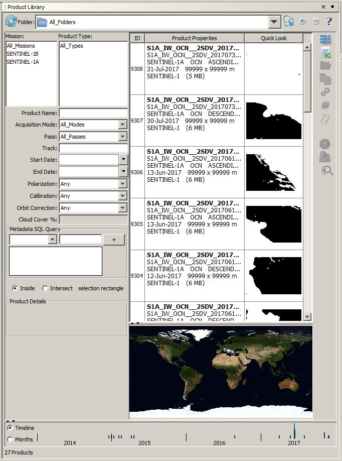

| Product Library | |
The Product Library tool optimizes the identification of data products in a database for fast retrievable of the metadata of locally stored products. Search results are displayed in a table listing product name, path, mission, product type, acquisition date, pass, pixel spacing, etc. without actually opening the original products. The footprint of each image is outlined on the world map over top of Blue Marble images with a place names vector layer. Multilooked quicklooks of the images are also generated and stored in the database for quick previewing.
The Product Library can optionally automatically add new metadata to the database whenever a product is manually opened. The user may also define a list of repository folders that will be scanned recursively for new or modified products.
The product readers of the Toolbox are able to abstract the metadata from each product into the Generic Product Model of the Toolbox. Thereby, the Product Library and all processing tools of the Toolbox are able to work with the metadata in this common form without requiring the user to manually input any metadata.
Products may be searched in terms of mission, product type, beam mode, ground location, date and time of acquisition, processing history, previously defined AOIs, and suggested image pairing. Products may also be searched by graphically drawing an area of interest on the world map and querying the database for products that cover the AOI. Use the radio buttons to choose whether the products have to be inside the AOI selection rectangle or just intersect it.
The user may then select from the resulting table of products which products to open, add to a project, or batch process directly from the Product Library.

After having selected the products you wish to import, press the Import to Project button to convert the products into DIMAP format and add them to the currently opened project. If a project is not currently opened you will be prompted to create a new project.
If you would like to simply open the products without converting them into DIMAP format then press the Open Selected button to add them to the DAT Product View list.
To Batch Process a list of selected products press the Batch Process button. This will open the Batch Processing dialog and add your products to the input list. If you right click on the Batch Processing button, a popup menu will appear with all the graphs from the User Graphs menu. You may select one and then the Batch Processing dialog will default to the graph selected.
To
access ESA SciHub, select ESA SciHub in the drop down Folder list
at the top and enter credentials if prompted. The Search button to the
right should become sensitive. Search criteria include mission, product
type, product name, acquisition mode, pass, track, time range as well
as cloud cover percentage and polarization where applicable. A search
area must be specified in the world map. To specify a cloud cover
percentage, either enter a single integer value (such as 10 for 10%) or
a range (such as 5-75 for 5 to 75 percent).
To start the search,
click on the Search button. The search results are listed in the table.
Corresponding footprints are outlined in the world map. Product details
(limited) are displayed.
To
download products, select them in
the list and click on the Download button and select the download
folder in the dialog window that pops up. The table will switch to the
download folder when the download completes. The download
folder will be added to the database if it is not already in it. To ensure that the downloaded product shows up in the
table, click in an unselected area on the world map to clear the search area.
To perform a
Joint Search, select the folder that contains the S1 or S2 product for
which the search for other S1 or S2 products is to be performed. Select
the product and click the Joint Search button to display the Joint
Search Criteria dialog box. To specify the time range, enter the number
of days to be subtracted (or added) from the date of the selected
product to obtain the start (or end) of the time range. The search area
is the bounding rectangle that contains the footprint of the selected
product. Other search criteria include cloud cover percentage,
acquisition mode and product type.
When the search completes, the table will switch to the SciHub folder automatically.